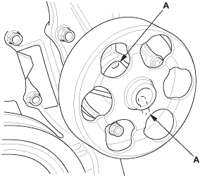
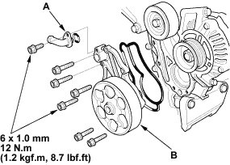

- Remove the drive belt (see page 4-25).
- Turn the water pump pulley counter-clockwise. Check that it turns freely.
- Check for signs of seal leakage. A small amount of ''weeping'' from the bleed hole (A) is normal.


- Remove the drive belt (see page 4-25).
- Drain the engine coolant (see page 10-6).
- Remove the crankshaft pulley (see page 6-12).
- Remove the oil cooler joint pipe (A), then remove the seven bolts securing the water pump. Remove the water pump (B).

- Inspect and clean the O-ring groove and mating surface with the water passage.
- Install the water pump with new O-rings in the reverse order of removal.
- Clean up any spilled engine coolant.
- Install the crankshaft pulley (see page 6-12).
- Refill the radiator with engine coolant, and bleed air from the cooling system with the heater valve open (see page 10-6).